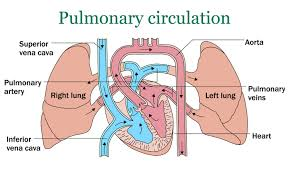

Pulmonary Circulation
Pulmonary Circulation of the Human Heart
Pulmonary circulation is the part of the circulatory system that carries deoxygenated blood from the heart to the lungs and returns oxygenated blood back to the heart. It plays a crucial role in ensuring that the blood becomes oxygen-rich before being pumped to the rest of the body.

Here’s a step-by-step explanation of pulmonary circulation:
-
Deoxygenated Blood Enters the Heart:
- Deoxygenated (oxygen-poor) blood returns to the heart via the superior and inferior vena cava.
- This blood enters the right atrium.
-
Blood Moves to the Right Ventricle:
- The right atrium contracts, pushing blood through the tricuspid valve into the right ventricle.
-
Blood is Pumped to the Lungs:
- The right ventricle pumps the blood through the pulmonary valve into the pulmonary artery.
- The pulmonary artery carries it to the lungs.
-
Gas Exchange in the Lungs:
- In the lungs, CO₂ is exchanged for O₂ in the alveoli.
- Now the blood is oxygen-rich.
-
Oxygenated Blood Returns to the Heart:
- The oxygenated blood returns to the heart through the pulmonary veins.
- This blood enters the left atrium.
-
Blood Moves to the Left Ventricle:
- The left atrium contracts and pushes blood through the mitral valve into the left ventricle.
-
Blood is Pumped to the Body:
- The left ventricle pumps the blood through the aortic valve into the aorta for body circulation.
Key Points of Pulmonary Circulation:
- Pulmonary artery: Carries deoxygenated blood from heart to lungs.
- Pulmonary veins: Carry oxygenated blood from lungs to heart.
- This circulation refreshes the blood with oxygen and removes CO₂.